隊伍編成
GBF的隊伍主要由角色、武器盤、召喚石三個元素組成。
角色
角色由主角+3個前排+2個後備組成。
主角是固定位置，除了職業以外不可更動。可以根據打的關卡來替換自己的職業。
角色使用的部分，這比較見仁見智。
我都是參考這裡的角色簡評
前期的話有什麼用什麼其實就行了，角色要發揮性能，很大一部份需要武器盤的支撐。
初期武器盤
這部分可以說是GBF裡最複雜的一塊了。
首先要知道武器上是有技能的，而新人騎空士除了官方配送的武器之外應該不會有什麼多餘的資源來練武器的技能等級，因此剛開始只要讓他自動編成攻擊力最高的即可。
一開始以推主線直到將六屬方陣開啟為目標。
武器盤的組成
這邊開始以方陣為例來說明。在方陣盤中的武器主要可分為四類。
方陣乘區:
主要來源是方陣武器(1.0/1.5/2.0/2.5等)、四象的方陣武器、終末方陣武器。
普刃乘區:
基本上只會用1把巴哈武器以及天司的少量普刃來提供。
EX乘區:
會以少量1~2把EX乘區的武器來提供，前期要是沒有活動的話隨便去SIDE STORY找把對應屬性的用即可，或是活動獎勵送的武器基本上都屬於EX乘區。
中後期EX乘區會以連戰/擊滅或是星幽武器來做最後的替換。
天司乘區:
這個乘區是比較特殊的一類，基本上無法與其他的東西加算(只取高)，效果為對有利屬性增加與傷，講白的就是直接增加最終傷害。
天司武器只能通過製作來獲得，一種屬性也只有一把。
一星難度的六屬方陣
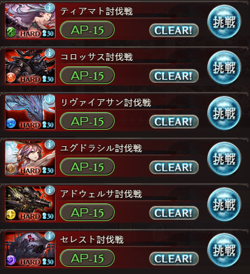二星難度的六屬方陣
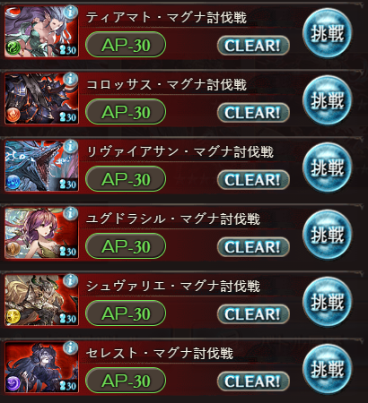方陣武器盤的目標
主線通過至24章之後就可以開始打六屬方陣了。這也是前中期最重要的事情，每天每一關都能打3場，記得每天要打就是了，如果自己打不過外放即可。
二星難度的方陣開關卡道具為一星的金頭，如果只單靠打一星來獲取應該是會不夠用，不夠的話在賭場可以兌換。
而方陣會掉落除了武器外還有方陣最重要的方陣召喚石，這也是新人騎空士相對好獲取屬晶的來源了。
而這些方陣武器也通稱方陣1.0
方陣武器
每一種屬性會掉落四種不同的方陣武器，但是不是每一種都是有用的。(大部分都是沒用的可以當作肥料)
風屬性
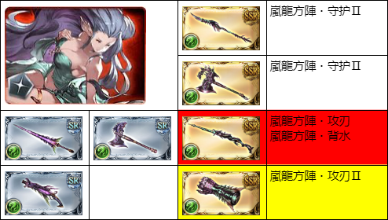以風銃獲取為主，在還沒打滿風銃前用風拳過渡即可。
風銃雖然攻刃較風拳低，不過風銃具有兩個乘區，因此血量下降之後攻擊力會高於風拳，(滿血時是風拳盤攻擊力更甚。)
火屬性
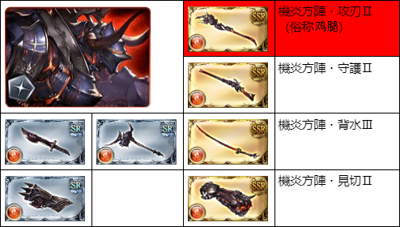只有火杖(俗稱雞腿)有用。
水屬性
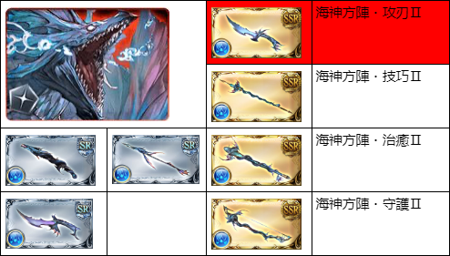只有水短劍有用。
土屬性
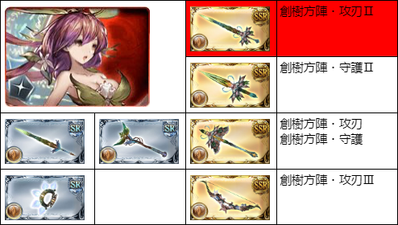只有土劍有用。
光屬性
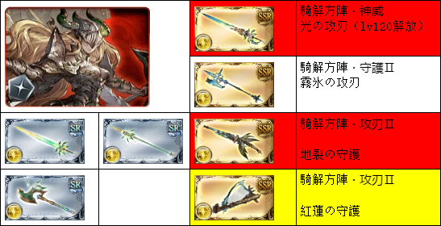最終目標是5把滿突的光劍，總共需要20把，而商店可以換10把，如果有拿到官方配送的光劍的話可以省事不少，因為這武器掉落率真的非常低。
而過渡期間可以使用光銃或光琴來替代，光銃白值略高於光琴。
值得一提的是，光劍在4突前只有一個乘區，效果量是遠低於光銃和光琴的。
暗屬性
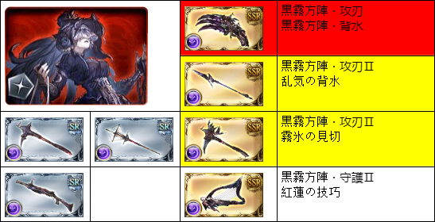暗爪的詞綴與風銃一樣，也是具有雙乘區的方陣武器。論掉落率和光劍有得比，可是商店不限制兌換數量，慢慢換即可。
過渡時期可使用暗斧、暗槍來替代，暗斧白值略高於暗槍。
六屬方陣1.0完成
經過約兩個禮拜大致上應該可以完成方陣1.0盤了(光屬也許還無法)。
接著會經過很長的一段過渡時期，主要是Rank的原因，GBF的HL關卡要101等以後才會陸續解放，而方陣2.0必須120等才能打。
方陣1.5的部分雖然可以在100等前打，不過N難度的關卡掉落率偏低，且只有火、水屬性需要，可以慢慢用榮譽來換就行了。
現階段火方的最終型態也是以方陣1.5的"樹枝"盤為理想編成，可以先慢慢換火的屬性。
六屬天司SSR化
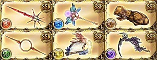因此這段時期，會先將六屬的天司武器SSR化以及做出第一把巴武。
巴武
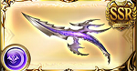而巴武的部分，只要去SIDE STORY將"どうして空は蒼いのか"跑完即可兌換一把。強烈建議兌換巴短(人類、長耳、不明種族的攻擊力與血量上升，較為泛用)
神巴武
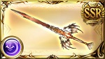神巴武器也可經由SIDE STORY中的"000"來兌換第一階段無垢武器。
神巴武器較巴武不同的是他是對應得意武器來發動技能，因此推薦第一把可以兌換較為泛用的劍，而屬性則是自己考量(給機神當主手使用的考量)。
火屬性
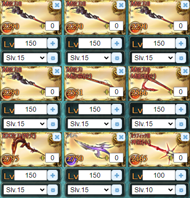水屬性
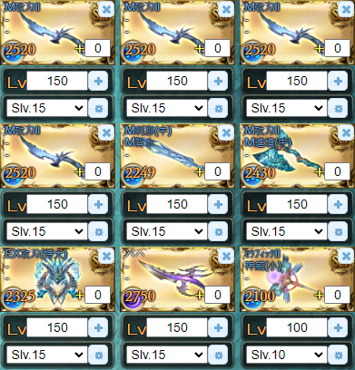土屬性
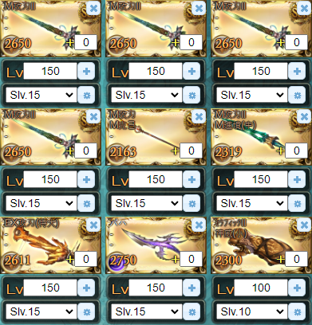風屬性
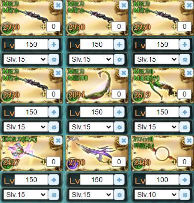光屬性
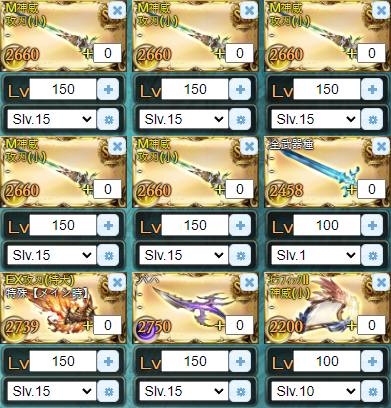暗屬性
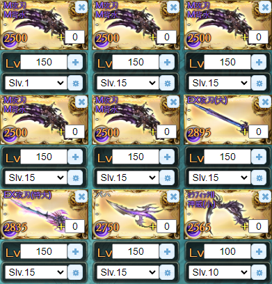武器技能升級
現在不用再堆技肥了，回收後參照這張圖做。注意最適化升級就好。
召喚石
召喚石主要分為三個部分。
A: 主要召喚
主召是計算武器盤中數據最重要的一部分，直接影響武器技能的效果量，如果主召和友召相同，加護效果量以相加計算。
B: 副召喚
此區的召喚石主要是以功能性為主來使用。如果召喚石有被動加護的話亦可啟動。
C: 輔助召喚
放置在這的召喚石無法主動使用，但可以啟動被動加護的影響。
常見的幾種召喚
主召
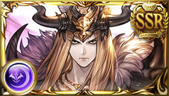神石:主神武器加護的召喚石
方陣:方陣武器加護的召喚石
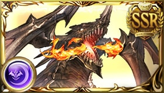
屬召:提供屬性攻擊力的召喚石
副召
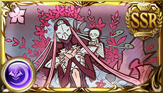轉世召:被動加護與天司同款，有利屬性最終傷害增加，只能透過製作獲得
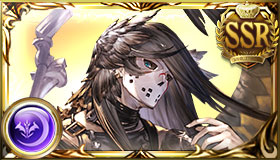
天司召:被動加護提供傷害上限
HP召:被動加護提供HP上升
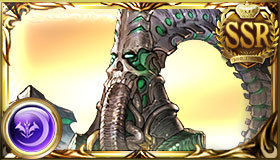
刻印召:被動加護給予對應刻印數量的屬性攻擊
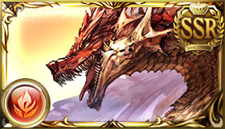
六龍召:被動加護可以增加主神加護的效果量
其他值得一提的召喚石
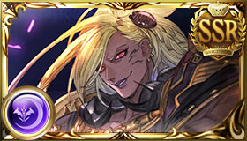巴布:強無敵！不管當主召還是副召使用都非常強。並且各種屬性都能使用
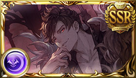
彼列:主要是放在輔召使用，放副召一般不會主動施放，副作用太大。被動加護是與傷30000
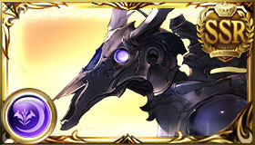
麒麟:被官方削減只能一個限定了，主動施放是刷新所有技能CD，並且主要加護可以提供高額的技能傷害及上限，一般做為對策關卡使用
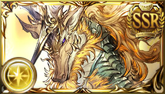
黃龍:主動施放可以讓我方全體角色即奧，主要加護可以在戰鬥開始時獲得30%的奧義值，一般做為周回時使用
輝夜:找朋友的召喚石，作為主召時可以增加物品掉落及經驗上升30%，打素材以及踢罐子的唯一選擇